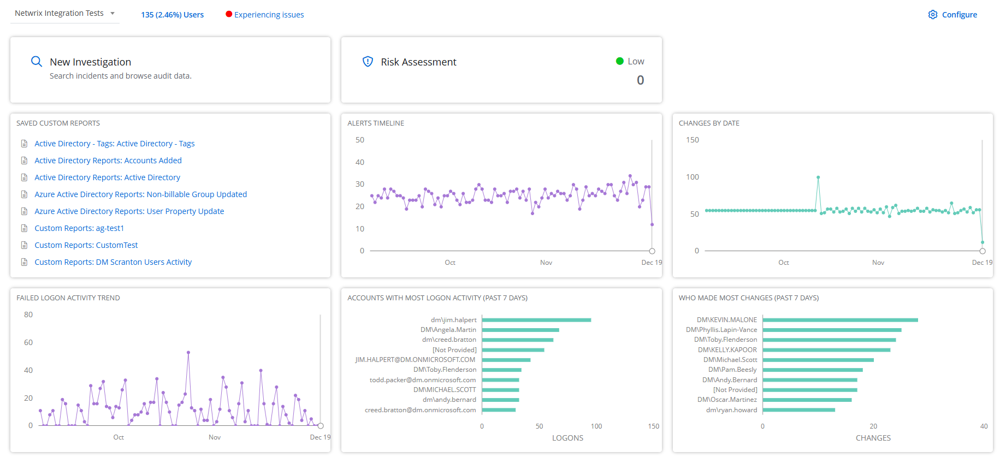

Organization Statistics
You can view various statistics related to an organization, such as health status, risk level, alerts timeline chart, changes by date trend, failed logon activity trend, custom reports list, and much more. These insights help you better understand the security posture of the organization and identify any potential vulnerabilities or areas for improvement.
To view an organization's statistics, click Home in the top bar. On the dashboard, click an organization name in the Organizations list to open the Statistics page for it.
You can view the following insights for an organization.
Organization
This drop-down displays the name of the organization. You can choose a different organization from here to view the statistics for that Organization.
Users
This link displays the total number of users in the organization along with their percentage share with respect to the total number of users in the managed organizations tenant in 1Secure. Click the value to navigate to the Billable Users page. See the Review Billable Users Report) topic for additional information.
Health Status
This link displays the current health status of the organization, which can be: Healthy, Trial in Progress, New, Update Recommended, Needs Attention, Experiencing Issues, Offline, Disabled, Not Configured, and Pending Deletion. Click the health status to navigate to the
New Investigation
Click the New Investigation card to navigate to the New Investigation page where you can create a new investigation (custom report). See the Custom Reports topic for additional information.
Risk Assessment
This card displays the risk level for the organization, such as high,
Saved Custom Reports
This card displays a list of custom reports created for the organization. See the Custom Reports topic for additional information.
Alerts Timeline
This card displays a line chart illustrating the number of alerts triggered during the past three months. Hover over a point on the chart to view the exact number of alerts triggered on any specific date. Click a point on the chart to navigate to the Alerts Timeline page. See the Alerts Timeline topic for additional information.
Changes By Date
This card displays a line chart illustrating the number of changes made to monitored objects during the past three months. Hover over a point on the chart to view the exact number of changes made on any specific date. Click a point on the chart to navigate to the Activity page, where you can view the complete Changes by Date report. See the Activity Reports topic for additional information on the Changes by Date report.
Failed Logon Activity Trend
This card displays a line chart illustrating the number of failed logon attempts to the environment during the past 3 months. Hover over a point on the chart to view the exact number of failed logon attempts on any specific date. Click a point on the chart to navigate to the Activity page, where you can view the complete Failed Logons report. See the Activity Reports topic for additional information on the Failed Logons report.
Accounts with Most Logon Activity (Past 7 Days)
This card displays a bar chart highlighting the accounts with the highest number of logon attempts to the environment during the past 7 days. Each account is represented by a bar. Hover over a bar to view the exact number of logon attempts for that account. Click a bar to navigate to the Activity page, where you can view the complete All Logon Activity report. See the Activity Reports topic for additional information on the All Logon Activity report.
Who Made Most Changes (Past 7 Days)
This card displays a bar chart highlighting the users who made the most changes to the environment during the past 7 days. Each user account is represented by a bar. Hover over a bar to view the exact number of changes by that user account. Click a bar to navigate to the Activity page, where you can view the complete Changes by User report. See the Activity Reports topic for additional information on the Changes by User report.
Organization Configuration
Click the Configure button to navigate to the